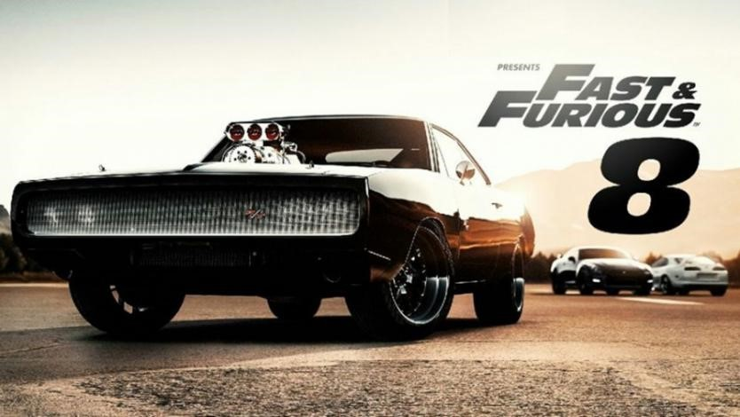
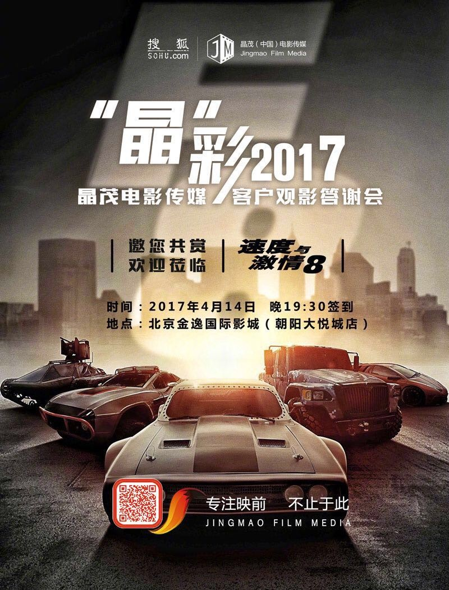

集团动态
加入青蚨 让激情不止于136分钟电影
时间：2017-04-15
4月14日青蚨携手搜狐共同参与了一场“晶彩2017”客户观影会，在首映当天感受《速度与激情8》（以下简称《速8》）带给我们的视觉盛宴！
>

《速8》主要讲述了多米尼克与莱蒂共度蜜月，布莱恩与米娅退出了赛车界，这支曾环游世界的顶级飞车家族队伍的生活正渐趋平淡。然而，一位神秘女子Cipher的出现，令整个队伍卷入信任与背叛的危机，面临前所未有的考验。
从2001年《速度与激情》正式上映以来就吸引了一大票铁粉。到2017年，《速度与激情》系列电影整整走过了16年，以平均2年的速度，从1到8！虽然不乏剧情老套等评论的出现，但每次这个团队都能在影片其他地方寻求突破，比如选景，比如炫酷的特技效果，这些均得到了观众们的一致好评。
在此次《速8》观影会正式开始之前，青蚨的企业宣传片赫然出现在影院荧屏上。这是青蚨2017年品牌全面露出的渠道之一。

拍摄团队用16年的时间完成了8部《速度与激情》的拍摄，在始终追求速度至上的同时也在追求其中传达给观众的团队、友情、爱情等方面积极向上的情感。而这正与青蚨的发展不谋而合。2009年青蚨小贷成立，从此青蚨进入快速发展的阶段。2010年青蚨资产成立，2015年青蚨资产进行多元化管理，青蚨普惠、青蚨普信、青蚨等品牌相继被分离出来。2016年青蚨开始集团化管理并逐渐形成金融、健康、餐饮、服务四大产业类型。8年的时间青蚨用行动谱写了什么是“青蚨速度”。
在高速发展的同时，青蚨也始终在寻找新的突破点。青蚨集团董事长徐东亚就曾表示：与时俱进，踩着时代的脚步进行创新，才是打造百年企业最稳健的思路。现在的青蚨已经形成了自己独有的生态链条，并于今年正式推出“蓝天计划”，现在的青蚨已经火力全开，让我们拭目以待青蚨最好时代的到来！